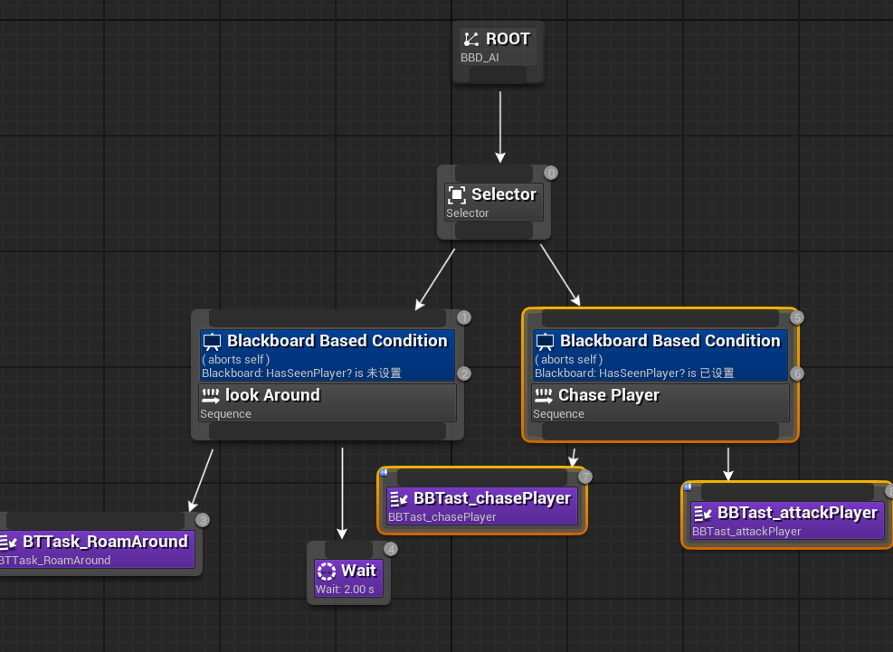
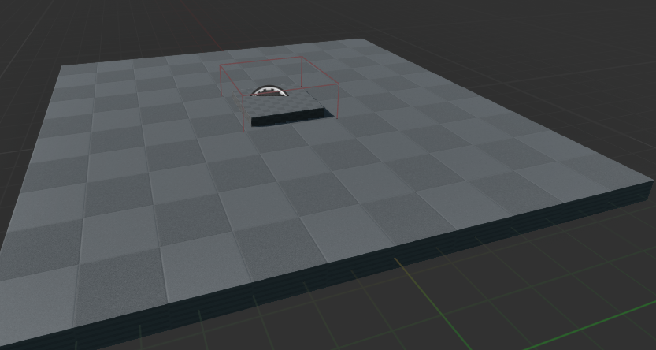
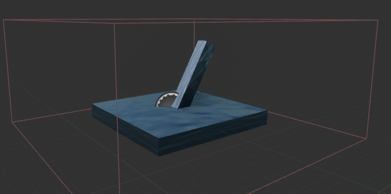

This is a Blueprint and C++-based Unreal Engine demo designed to replicate the core gameplay mechanics of the classic RPG Dark Souls series. In addition to the default movement and jumping provided by the third-person template, I have integrated an ARPG animation pack to implement essential combat mechanics, including dodging, blocking, attacking, and combo attacks, along with the corresponding combat logic. Furthermore, I have added basic AI patrol and combat behavior, enabling enemies to actively search for and engage the player, enhancing both the challenge and immersion of the game.
Using IK retargeting to bind the ARPG animation pack to the blueprint skeleton, and generating state animations (such as continuous defense), action animations, and idle animations into 2D Blend Space and State Machine.
One-shot animations (such as attack, block, dodge, combo, take damage, and death) are generated as Animation Montages, and Animation Notifiers are created at specific timestamps to trigger corresponding functions.
Actions are implemented through Animation Montages, and Handles along with Animation Notifiers are used to notify the character class when damage is taken and whether dodging or blocking is possible. Keyboard input is disabled during actions to ensure smooth execution.
The damage mechanism is implemented using Sphere Trace for Objects, which is included in the function and triggers the enemy's HitReaction event. The logic for receiving damage is similar, ensuring the integrity and consistency of the combat system.
AI patrol is implemented using a combination of NavMesh,Behavior Tree and Tasks. The Tasks are integrated with PawnSensing to enable the AI to detect and chase enemies. Additionally, the Tasks are combined with our implemented combat system to determine when to attack.
AI patrol is implemented using a combination of NavMesh,Behavior Tree and Tasks. The Tasks are integrated with PawnSensing to enable the AI to detect and chase enemies. Additionally, the Tasks are combined with our implemented combat system to determine when to attack.
Through the mechanism of levers and elevator platforms, players can access new areas. This feature is implemented using Blueprints, with interaction logic handled through Collision Box , API blueprintand Character Event Graphs.
 Email: qiwu.wen@umontreal.ca
phone number: 514-569-3908